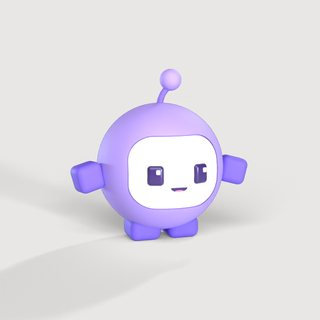
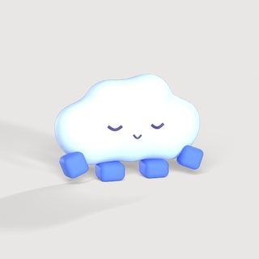
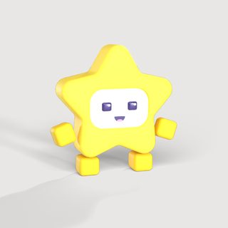
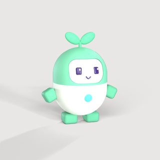
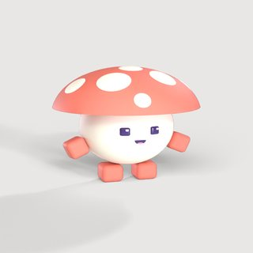
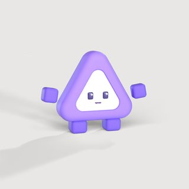
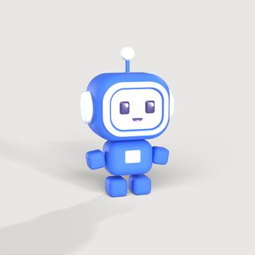
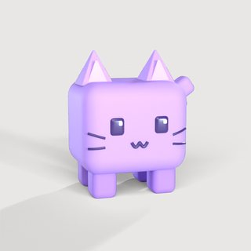

Bro Inc.
A voice-first assistant that runs real web errands for you, like ordering food or applying to jobs, in its own browser. I co-founded it and own the iOS app, the voice pipeline, and the checkout mapping the agent pays with.
- Wake word on the phone. Ported openWakeWord's streaming pipeline to Swift: three chained ONNX models (mel spectrogram, embedding, classifier) running on every 80 ms of audio through AVAudioEngine and ONNX Runtime, so listening never goes to the cloud.
- Only your voice wakes it. Built voice enrollment and speaker verification with NVIDIA NeMo's TitaNet embeddings in a Python FastAPI service, gating every wake-word trigger. Tuned match thresholds on real use and fixed a bug that left the detector permanently deaf after one rejected trigger.
- The iOS app. Sign-in and home screens, the first-run voice enrollment flow, the native background plugin that hands the mic between wake word, speech-to-text, and spoken replies, and the animated Bro mascot.
- Checkout mapping. Verified the card-entry fields on DoorDash, Uber Eats, Grubhub, and Uber live over Playwright and CDP, so the agent can type a saved card into each one. Found three different card-form architectures across them and documented where each site puts its sign-in wall.
- Bro-verse. Bro and seven friends, each generated by a Python script in Blender, rendered in Cycles, and exported to a three.js world where they wander, meet, and show off their moves.
SwiftONNX RuntimeAVAudioEngineNVIDIA NeMoFastAPICapacitorPlaywrightBlender Pythonthree.js
Loading the Bro-verse…








How "hey bro" reaches the agent
- 1The phone listens in 80 ms chunksAVAudioEngine, voice-processing mic
- 2Wake word, on device3 ONNX models score every chunk
- 3Is it you?TitaNet voiceprint vs. your enrollment
- 4Bro runs the errandIts own browser, mapped checkouts